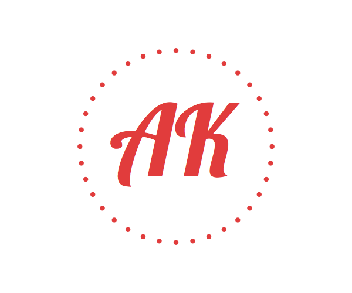

Loading…
Waiting for your current location...
Unless you want to see the bouncing ball forever, please enable location sharing in your browser settings...
Search Result(s) Found
×
Yelp
Wikipedia
Based on
More on Yelp.com!